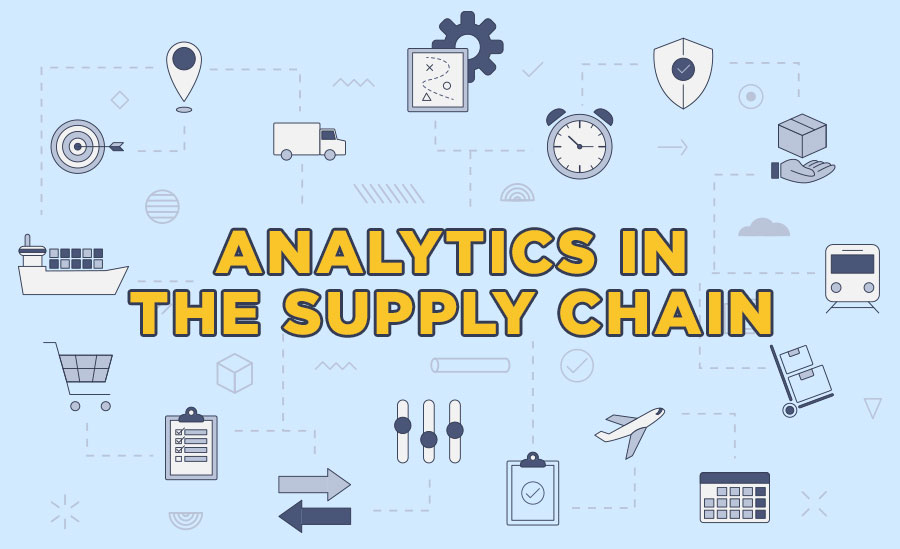
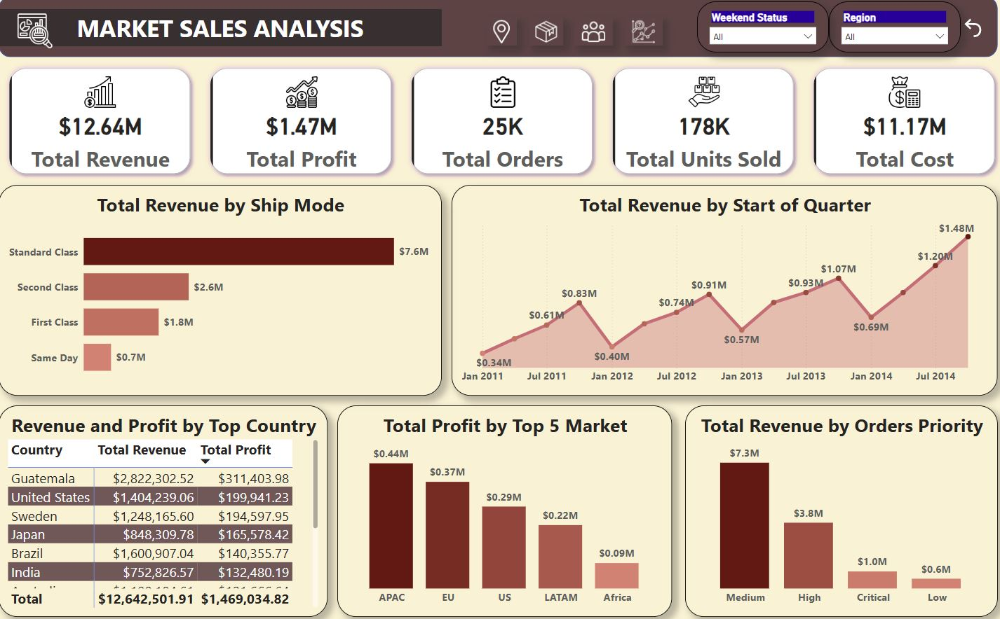

This project analyzes key areas of supply chain performance, identifying inefficiencies and opportunities for improvement. It highlights transportation challenges, noting road transport’s long lead times and air transport’s speed advantage. Carrier performance analysis suggests renegotiating Carrier B's contract due to high costs and optimizing routes for efficiency. Skincare products emerged as the most profitable category, warranting further investment. Quality control bottlenecks, including a 38% defect rate, were identified as major issues impacting product availability. Seasonal revenue variability underscored the need for better demand forecasting. A predictive model explained only 20% of revenue variability, indicating the need for advanced analytics. Recommendations include improving quality control, optimizing logistics, and implementing dynamic pricing. The project emphasizes leveraging machine learning for better revenue prediction. Addressing these issues will enhance efficiency, boost customer satisfaction, and drive long-term profitability.

This project explores sales performance across multiple dimensions, including product categories, outlet performance, and item demand. Total sales reached 18.59M, with 1,560 different items sold across 10 outlets. Low-fat items dominated sales (64%), suggesting a focus on expanding this category. Fruits & Vegetables led sales, followed by Snack Foods and Household items. Medium-sized outlets performed best, accounting for 64% of total sales. OUT027 was the highest-grossing outlet, highlighting strategies to replicate its success elsewhere. Sales distribution analysis showed most sales clustered in the lower range, with a few outliers. Recommendations include focusing on top-selling categories, optimizing inventory based on demand, and targeted marketing strategies. Expansion should prioritize medium-sized outlets, given their high performance. These insights guide strategic decisions for improving sales, stock management, and outlet efficiency.
This project showcases a Power BI dashboard for monitoring supply chain performance across financial, operational, and inventory metrics. It features multi-page analysis covering key areas such as quality control, logistics, and individual product performance. Drill-through functionality allows users to explore specific products in detail. Dynamic visualizations enhance interactivity, enabling real-time data exploration. Filter bookmarks and page navigation streamline user experience. The dashboard highlights trends in transportation efficiency, carrier performance, and revenue variability. Key findings help identify bottlenecks, optimize logistics, and improve quality control. Power BI's advanced features, including tooltips and interactive charts, make the dashboard highly intuitive. The project demonstrates expertise in data visualization and business intelligence. It serves as a powerful decision-making tool for optimizing supply chain management.

This project analyzes financial and operational data from a healthcare provider to optimize efficiency and patient care. The total billing amount was £3.36M, with X-Rays contributing the highest revenue (£1.05M). Cardiology recorded the most visits (823), while hypertension was the top-billed diagnosis (29.71%). Provider performance analysis identified top-rated doctors and areas for improvement. Patient data insights included length of stay, visit types, and demographics. Key recommendations include optimizing high-cost procedures and improving provider efficiency. Billing trends across departments highlight opportunities for cost management. Power BI and Power Query were used for data visualization and analysis. The project demonstrates how data-driven strategies can enhance financial management and healthcare quality. Findings can support decision-making to improve patient outcomes and provider performance.

This project focuses on analyzing sales data to uncover key revenue drivers, profit trends, customer behavior, and product performance across regions and time periods. It highlights revenue breakdowns by ship mode, order priority, and top-performing countries, with total revenue reaching $12.64M and profits at $1.47M. Customer insights include 795 total customers and an average revenue per customer of $15.9K. The project identifies high-performing products like Apple Smart Devices and Office Supplies. Market analysis covers regions like Guatemala and the US, while order and shipping data reveal trends in sales distribution. Tools used include Power BI and Power Query. The goal is to optimize sales and marketing strategies based on insights from the analysis. The project offers actionable recommendations for revenue optimization, customer targeting, and product focus. Key findings will guide strategic business decisions and market expansion.

This project analyzes marketing campaign performance to improve conversion rates and maximize ROI using EDA, hypothesis testing, regression, and trend analysis. The dataset covers one year of marketing data, revealing an average conversion rate of 8.01% and an ROI of 5.00. Influencer marketing via email performs best, while Facebook and website traffic drive high ROI. Customer segmentation shows different preferences—tech enthusiasts favor email, while foodies engage more with digital ads. Statistical tests highlight engagement metrics as key conversion predictors. Recommendations include increasing investment in high-performing channels, optimizing Google Ads, and personalizing campaigns. Predictive models help refine budget allocation and targeting. Challenges include data limitations and the need for better campaign variation. The project provides data-driven strategies to improve marketing efficiency, boost engagement, and enhance long-term profitability.

This project applies RFM (Recency, Frequency, Monetary) segmentation to classify customers based on purchasing behavior, enabling targeted marketing strategies. MySQL processes the data, while Python visualizes trends. Customers are scored using quartiles, categorizing them into segments like Loyal Customers, Big Spenders, and Potential Churners. Heatmaps analyze segment-wise behavior, revealing that Loyal Customers have high engagement and spending, while Potential Churners show high recency and low frequency. Geographic analysis highlights country-specific trends, with Spain having the most engaged customers and France showing high churn risk. The findings guide retention strategies, customer engagement, and marketing initiatives. Visualizations using scatter geo maps help businesses refine region-specific strategies. The project ensures businesses can optimize retention, boost loyalty, and enhance revenue by leveraging customer segmentation insights.
This project conducts a cohort analysis using MySQL and Power BI to track customer retention, purchasing behavior, and revenue trends over time. Customers are grouped into cohorts based on their first purchase date, and metrics such as invoice counts, customer counts, and revenue are analyzed for each group. The analysis includes calculating the rate of change in invoices, customers, and revenue across time periods to assess growth or decline trends. Power BI visualizations help present these insights in an easy-to-understand manner. The project follows structured steps, including data loading into MySQL, aggregating invoice and customer counts by cohort, and analyzing revenue performance. By identifying long-term trends, businesses can improve customer engagement and optimize marketing strategies. The study also highlights revenue growth trends and customer lifetime value.

This project analyzes pizza sales using Power BI to track key metrics such as total revenue, order trends, and best/worst-selling pizzas. It evaluates sales performance based on pizza categories, sizes, and time periods to help improve business decisions. Key KPIs include total revenue, total pizzas sold, average order value, and revenue distribution by pizza size. Data visualization in Power BI enables quick insights into customer preferences and order trends by day and month. The project ranks top-performing and least-selling pizzas based on revenue and quantity sold. Additionally, it provides recommendations to optimize inventory and pricing strategies. SQL queries help extract insights from the dataset, ensuring accurate reporting. Overall, this project provides actionable insights to boost sales and efficiency.

This project provides a comprehensive sales analysis across various markets, customers, and branches to identify revenue drivers and growth opportunities. It includes revenue, sales quantity, and profit margin breakdowns for different regions and customer types. Key insights highlight top-performing markets such as Jessore and Comilla, with Jessore contributing 742.99M৳ in revenue. The analysis includes customer segmentation, revealing that Electricalsara Stores generated the highest revenue (591.07M৳). Profit margins vary significantly across markets, with Brick & Mortar stores contributing 84.44% of the total profit margin. Year-on-year and quarter-on-quarter trends track growth, identifying peak performance periods and declines. The project uses Power BI, Power Query, and SQL for visualization and data manipulation. SQL queries help analyze customer records, market-specific transactions, and date-based revenue insights. Revenue growth trends from 2018 to 2020 show fluctuations, with a peak in Q1 2018 (+24.72%) and a decline in Q2 2020 (-19.89%). This data-driven approach enables businesses to optimize strategies, maximize profitability, and enhance customer engagement.

This project focuses on customer behavior analysis using Recency, Frequency, and Monetary (RFM) segmentation. Customers are classified into various groups, such as Loyal Customers, Potential Churners, New Customers, and Big Spenders. By leveraging Snowflake for data storage and Power BI for visualization, the project helps businesses identify high-value customers and retention strategies. Recency analysis determines how recently customers made purchases, frequency tracks purchasing patterns, and monetary value assesses total spending. The segmentation framework allows targeted marketing, improving customer engagement and retention rates. Key performance indicators (KPIs) such as total active customers, average purchase value, and customer lifetime value are analyzed. The insights drive personalized promotions, loyalty programs, and proactive churn prevention. Snowflake’s cloud-based analytics enhance scalability, while Power BI visualizations make data interpretation seamless. This structured approach helps businesses improve revenue by optimizing customer relationships and marketing efforts.

This project analyzes bike sales data across various markets, branches, and customer types to uncover revenue trends, profit margins, and growth patterns. Using Snowflake for data processing and Power BI for visualization, the project examines revenue generation by top markets and customer segments. Key insights include the highest revenue-contributing cities, top customers, and profit margins by sales channel (Brick & Mortar vs. E-Commerce). Year-on-year and quarter-on-quarter analysis tracks business growth, highlighting peak performance periods and downturns. SQL-based queries support data extraction, including filtering transactions by market, currency, and time period. Power BI dashboards present insights on sales quantity, profitability, and revenue trends to support strategic decision-making. This analysis helps optimize pricing, sales channels, and customer engagement strategies.
This project examines customer subscription data from a bank’s marketing campaigns to identify key drivers influencing subscription behavior. Using BigQuery for data analysis and Power BI for visualization, the study explores the impact of demographics, financial status, and campaign effectiveness. Data preprocessing includes removing anomalies, categorizing customers, and analyzing campaign interactions. Machine learning models predict subscription likelihood and determine the most influential factors in customer decisions. Power BI dashboards display SQL-based insights, subscription trends, and predictive model results. Key findings suggest that younger customers and those with higher balances are more likely to subscribe. Short, targeted campaigns perform better than prolonged ones. This project helps financial institutions refine marketing strategies and improve customer acquisition.

This project uses hierarchical clustering and predictive modeling to segment sales data and forecast revenue trends. The analysis identifies key business patterns by grouping customers and products based on profitability, sales channels, and shipping durations. Data preprocessing ensures clean, structured inputs for advanced analysis, while BigQuery stores processed data for scalability. Regression models predict revenue and profit with high accuracy, with feature importance analysis highlighting cost, order quantity, and shipping duration as major factors. Agglomerative clustering reveals high-profit segments, with wholesale channels performing best. Power BI dashboards integrate these insights for dynamic reporting. This project enables businesses to optimize pricing, supply chain strategies, and customer targeting efforts.
This project explores factors influencing medical insurance charges using EDA and hypothesis testing. Key demographic variables like age, BMI, smoker status, and region are analyzed for patterns in insurance costs. Visualizations such as count plots, regression plots, and pairwise relationships provide insights into data distribution. Proportion analysis highlights subgroup contributions to total charges. Hypothesis tests like Chi-square, T-tests, Z-tests, and ANOVA validate statistical significance. The one-sample and two-sample T-tests compare BMI and charges across demographics. Normality testing ensures data suitability for further analysis. The final findings assist insurers in risk assessment. Advanced statistical tests refine insights for pricing strategies. The project guides data-driven decision-making in the insurance industry.

This project develops a machine learning model for predicting credit default risk. Using an imbalanced dataset, feature engineering and resampling techniques improve classification accuracy. Models like Logistic Regression, Random Forest, and XGBoost are evaluated, with XGBoost performing best. The model achieves a high AUC of 0.98, Gini of 0.97, and KS statistic of 86.87%. Interpretability is ensured through SHAP and LIME analysis. AUC-ROC curves and decile analysis confirm model reliability. Deployment strategies focus on retraining to mitigate risks from under-sampling. A Streamlit-based interactive interface enables real-time credit scoring. The project integrates machine learning with business needs for financial decision-making. Findings enhance risk assessment in lending institutions.

This project segments retail customers using clustering techniques based on purchasing behavior. Features such as Quantity, UnitPrice, and Revenue help identify distinct customer groups. Cluster analysis supports targeted marketing and personalized promotions. Revenue and purchase quantity trends reveal seasonal variations. Classification models predict customer segments for new data entries. Insights aid banks and financial institutions in optimizing customer relationships. Clustering helps improve promotions and inventory management strategies. The framework is adaptable to various industries and datasets. A structured approach enhances customer engagement and business decision-making. The project provides a data-driven methodology for retail customer analysis.

This project predicts airline customer satisfaction using machine learning techniques. Key drivers include demographics, travel preferences, and service quality metrics. Data preprocessing and feature engineering optimize model performance. Logistic Regression, Random Forest, and LightGBM models are tested, with LightGBM achieving the highest accuracy (86.16%) and AUC (0.94). Findings indicate service quality is the most critical factor in satisfaction. A Streamlit Cloud-based deployment enables real-time customer sentiment predictions. The airline can proactively address dissatisfaction and enhance loyalty. Predictive analytics aids in strategic decision-making and service improvements. The model balances accuracy and interpretability for real-world applications. This project showcases machine learning's role in improving customer experience.


{kind=link}
{kind=link}
{kind=link}
{kind=link}
{kind=link}
{kind=link}